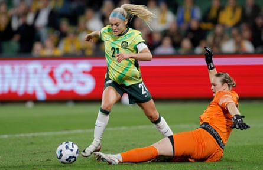

Chloe Kelly has signed for Arsenal on a free transfer after her successful loan, which ended with a Champions League title . “Putting pen to paper on a permanent contract at Arsenal is a standout moment for me,” said Kelly, who is in Switzerland preparing for England’s Euro 2025 campaign.
“Learning from an incredible manager and continuing to build relationships with an excellent team is a journey I’m looking forward to continuing.”
Renée Slegers, the manager, said: “I’m delighted that we’ve been able to make Chloe a permanent signing for us. She had a great impact for us and played an important role in what we achieved here last season, and I know she shares our ambition to compete for more.”
The 27-year-old forward joined on loan in January after falling out of favour at Manchester City. She had pushed hard for a move to increase her chances of making England’s Euros squad after starting one game in the first half of the season. Kelly had posted on Instagram that she wanted “to be happy again” and criticised City, saying they were dictating who she could or could not join.
Kelly had spent eight years at Arsenal from the age of 12 and made 19 first-team appearances in that first spell, scoring nine goals. She joined Everton after two loans there, scoring 18 goals in 51 games, before joining City in 2020 and winning the FA Cup and League Cup.
Kelly scored England’s Euro 2022 winning goal against Germany and has made 53 appearances for England, scoring eight times.
After the Champions League final, Kelly praised Arsenal for helping her find happiness again on the pitch. “From being in such a dark place to now, it’s crazy,” she said.
Kelly slotted back in at Arsenal instantly and was a crucial part of their charge to a second European title. She was given a standing ovation on making her second debut and danced and celebrated with fans in The Tollington pub after Arsenal’s trophy lift outside the Emirates Stadium.
“I’m excited for more silverware at this special club and to bring more trophies back to north London to celebrate with our supporters,” she said. “I’ve always said that Arsenal supporters are the best and to have them on my side, singing my name, means so much to me.”
Arsenal’s director of women’s football, Clare Wheatley, said: “Chloe’s application, attitude and performances were outstanding throughout her loan spell last season and we are delighted to continue working together.”
Ellie Carpenter said her move to Chelsea was ‘a new adventure’.Photograph: Richard Wainwright/EPA
Chelsea have signed the Australia full-back Ellie Carpenter from OL Lyonnes on a four-year contract, reuniting with Sonia Bompastor, her former coach at the French champions.
The 25-year-old, who made her Australia debut at 15, is a two-time Champions League winner and said of her move to the Women’s Super League champions: “I’m really excited about this new challenge; it’s a new adventure. It feels like the right move for me and I can’t wait to get started and give my all for this club. I’m very proud to join such a big club, one of the biggest in women’s football.”
Paul Green, Chelsea’s head of women’s football, said: “Ellie is a player who we have tracked for many years. She has a lot of experience for someone of her age and has won numerous titles in her career, including the Champions League. She is an athletic full-back who loves to get forward. We are excited to see how she continues to develop and what she will add to an already talented squad of players.”
Carpenter’s arrival comes after the Canada full-back Ashley Lawrence moved in the opposite direction on Tuesday.